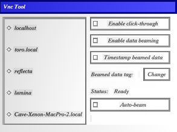
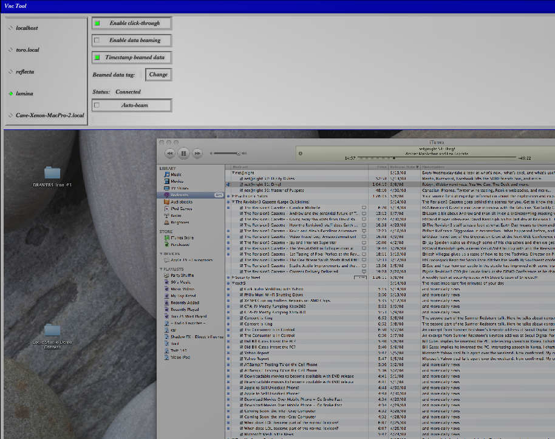
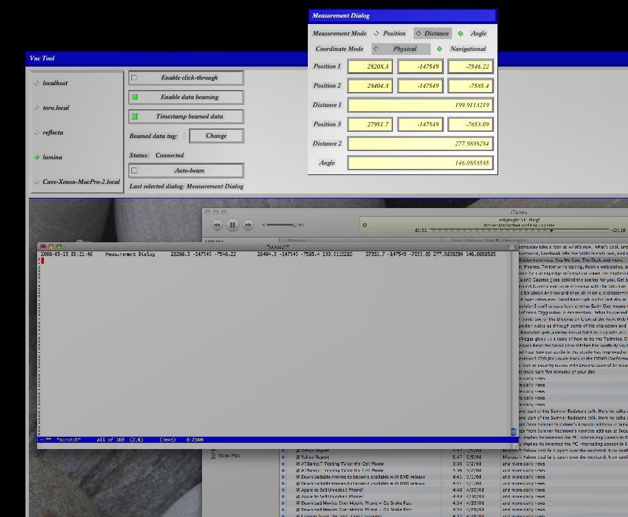

This document describes the configuration and operation of the VncTool and the VncVislet. The VncTool (using the companion VncVislet) implements a VNC (Virtual Network Computing) client within the Vrui environment and provides a special data beaming feature for exporting data from the Vrui environment to a remote computer.
VNC servers and clients communicate via the RFB protocol. (RFB stands for Remote Frame Buffer, the original name of the system before it was known as VNC.) The RFB protocol provides a client-server environment for controlling a remote computer through its graphical user interface. Whenever a portion of the screen on the remote computer changes, the VNC server running on the remote computer transmits that portion of the screen to the VNC client (which is running on the local computer). In addition, the RFB protocol allows keypresses and mouse events from the client computer to be transmitted to the remote computer, clipboard information to be shared between the two computers, and the remote computer's bell events to be transmitted to the client computer.
The VncVislet implements version 3.3 of the client side of the RFB protocol. Transmission of left mouse button events is supported, however clipboard data and keypresses are not supported.
A special feature called data beaming is provided whereby the data contained in dialog boxes within the Vrui environment can be transmitted to the remote computer. The transmission of the data is in text form and uses the keypress transmission feature of the RFB protocol to accomplish this.
VNC offers many advantages for this application, including:
First, install the VncTool and VncVislet plugins in the Vrui installation directory. Then, set up the VncTool in your Vrui.cfg file (The VncVislet requires no special configuration). See the Configuration section for details.
Within Vrui, load the VncTool into the environment, mapping it to a convenient device button. This device button will be referred to as the "VNC button" in the remainder of this document. Once loaded, the tool presents a dialog box like the following:

The left part of the dialog contains servers (configured in Vrui.cfg) to which you can connect. The right part of the dialog contains status indicators and controls for the VNC interaction.
To connect to a remote server, click on its name in the dialog. A keyboard will pop up with which you can enter the password for the remote server. Once you have entered the password, click its ENTER key to submit the password. Once you are connected, the VncTool dialog expands to display the remote server's desktop:

At this point, provided that the Enable click-through toggle is enabled, you can use the VNC button to send click, double-click and drag mouse events to the remote computer's desktop.
The Data beaming feature of the VncTool transmits data from a dialog box within the Vrui environment to the remote computer. This is implemented by sending keypresses representing the data to the remote computer. This technique makes cross-platform data transmission easy, but is somewhat risky if the keyboard focus on the remote computer is not set correctly prior to beaming. For this reason, the Enable data beaming toggle is turned off by default in the controls section of the VncTool dialog. Before enabling data beaming, make sure that you have clicked through to an appropriate window on the remote computer which will receive the data. To be extra safe, turn off the Enable click-through toggle so that the focus is not inadvertently reset while beaming data.
Once you have set the keyboard focus on the remote computer and enabled data beaming, click another dialog from which you wish to beam data with the VNC button. The data contained within the clicked dialog will be transmitted to remote computer. Note also that a status item appears in the VncTool dialog indicating the name of the last selected dialog, i.e., the dialog from which data was last beamed.

The standard way to beam data is to click a dialog with the VNC button. After the first time, you can simplify your data transfer workflow by enabling the Auto-beam toggle. This will beam data from the dialog indicated by the "Last selected dialog" status regardless of where the VNC button is clicked. This allows you to be working with another tool and to simply click the VNC button without pointing back at the source dialog every time.
Data beaming sends data to the remote computer as follows:
In addition, the string interDatumString, configured in Vrui.cfg, is inserted between each item listed above. The default values for for beginDataString, endDataString and interDatumString are, respectively, "", "\n" (newline) and "\t" (tab). These default settings are suitable for entry into Microsoft Excel, for example.
The beamed data tag is useful for tagging data sent to the remote computer according to its meaning. You can change this tag for subsequent data beaming at any time by clicking the Change button next to the beamed data tag field in the VncTool dialog. If this string is empty, then no data tag is transmitted.
The data fields are obtained from the source dialog by traversing its controls in a depth-first order.
Note that the initial values for beginDataString, endDataString, interDatumString and the initial settings for Enable click-through, Timestamp beamed data, Beamed data tag and Auto-beam are configurable in Vrui.cfg on a server-by-server basis. The initial setting for Enable data beaming is always false.
The VncTool is configured in your Vrui.cfg file. See the Vrui documentation for general information about this file.
Configuration of the VncTool involves the following steps:
The Vrui.cfg file is separated into sections for various installations. The VncTool settings must be entered into any sections for which you will be running an installation.
If the VncTool is not compiled directly into your Vrui installation, you can tell Vrui where to find the VncTool using an toolSearchPaths entry.
This entry tells Vrui where to look for tools. For example:
toolSearchPaths ( "/usr/local/Vrui-1.0/lib/VRTools/", "/Users/blackguard/develop/vruivnc/" )
Add "VncTool" to the toolClassNames entry.
For example,
toolClassNames ( SixDofLocatorTool, \
WaldoLocatorTool, \
ScreenLocatorTool, \
VncTool )
Next, create a VncTool subsection within the section in which you are working.
section VncTool
endsection
Next, you must configure the hostnames for the servers to which you wish to connect.
Within the VncTool subsection, create a hostnames entry which is a list of hostnames and/or IP addresses.
Note that names containing "." or "-" must be enclosed in double quotes. For example:
hostNames ( localhost, "toro.local", reflecta, lumina, "Cave-Xenon-MacPro-2.local" )
Several aspects of the VncTool can be configured within the VncTool subsection. The following example shows these entries, and details for each entry can be found in the Appendix.
beginDataString ""
interDatumString "\\t"
endDataString "\\n"
initialEnableClickThrough true
initialTimestampBeamedData true
initialBeamedDataTag ""
initialAutoBeam false
initViaConnect true
rfbPort 0
requestedEncodings ""
sharedDesktopFlag true
Note that when enclosing a string in double quotes, it is necessary to double the backslashes because the parser for double-quoted strings interprets \c for some character c as c. Special characters like tab are expanded by the VncTool after the Vrui configuration file parser has parsed the file. See the Appendix for a list of special escape characters.
Any of the above configuration entries can be overridden on a server-by-server basis in a subsection of the VncTool section. For server <host> This subsection is named hostDescription_<host>. This is useful for setting server-specific data beaming strings as in the following example:
section hostDescription_localhost
beginDataString ""
interDatumString "\\t"
endDataString "\\n"
endsection
section hostDescription_reflecta
beginDataString "\\""
interDatumString "\\",\\""
endDataString "\\""
rfbPort 3
endsection
toolSearchPaths ( "/usr/local/Vrui-1.0/lib/VRTools/", "/Users/blackguard/develop/vruivnc/" )
toolClassNames ( SixDofLocatorTool, \
WaldoLocatorTool, \
ScreenLocatorTool, \
VncTool )
section VncTool
hostNames ( localhost, "toro.local", reflecta, lumina, "Cave-Xenon-MacPro-2.local" )
beginDataString ""
interDatumString "\\t"
endDataString "\\n"
initialEnableClickThrough true
initialTimestampBeamedData true
initialBeamedDataTag ""
initialAutoBeam false
initViaConnect true
rfbPort 0
requestedEncodings ""
sharedDesktopFlag true
section hostDescription_localhost
beginDataString ""
interDatumString "\\t"
endDataString "\\n"
endsection
section hostDescription_reflecta
beginDataString "\\""
interDatumString "\\",\\""
endDataString "\\""
rfbPort 3
endsection
endsection
beginDataString | |||
| Data type: | String | ||
| Escapes expanded: | Yes | ||
| Default value: | "" | ||
| Description: | String to be output at the beginning of a data beam operation. | ||
interDatumString | |||
| Data type: | String | ||
| Escapes expanded: | Yes | ||
| Default value: | "\\t" (tab) | ||
| Description: | String to be output between data items in a data beam operation. | ||
endDataString | |||
| Data type: | String | ||
| Escapes expanded: | Yes | ||
| Default value: | "\\n" | ||
| Description: | String to be output at the beginning of a data beam operation. | ||
initialEnableClickThrough | |||
| Data type: | Boolean | ||
| Default value: | true | ||
| Description: | Initial setting for the Enable click-through toggle. | ||
initialTimestampBeamedData | |||
| Data type: | Boolean | ||
| Default value: | true | ||
| Description: | Initial setting for the Timestamp beamed data toggle. | ||
initialBeamedDataTag | |||
| Data type: | String | ||
| Escapes expanded: | Yes | ||
| Default value: | "" | ||
| Description: | Initial setting for the Beamed data tag field. | ||
initialAutoBeam | |||
| Data type: | Boolean | ||
| Default value: | false | ||
| Description: | Initial setting for the Auto-beam toggle. | ||
initViaConnect | |||
| Data type: | Boolean | ||
| Default value: | true | ||
| Description: | Controls whether the VNC protocol is initiated via a TCP connect or a TCP listen. The correct setting will be determined by the server to which you are connecting. | ||
rfbPort | |||
| Data type: | Integer | ||
| Default value: | 0 | ||
| Description: | The RFB/VNC port. Must be positive. The correct setting will be determined by the server to which you are connecting. | ||
requestedEncodings | |||
| Data type: | String | ||
| Escapes expanded: | No | ||
| Default value: | "" | ||
| Description: | List of RFB/VNC protocol encodings, separated by spaces and in order of preference.
Valid encodings are Raw, CopyRect, RRE, Hextile and ZRLE. | ||
sharedDesktopFlag | |||
| Data type: | Boolean | ||
| Default value: | true | ||
| Description: | Controls whether or not you are willing to share the remote desktop with other clients, or if you want exclusive access. | ||
Certain strings are expanded when the escape character \ appears in the string. An escape sequence is of the form \c where c is a character. The following table summarizes how these escapes are handled
| Escaped character | Replacement |
| t | newline character (ASCII 9) |
| n | newline character (ASCII 10) |
| r | carriage return character (ASCII 13) |
| any other character c | c |